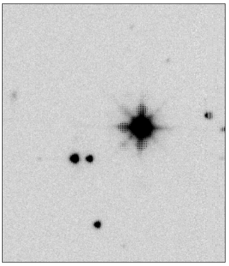
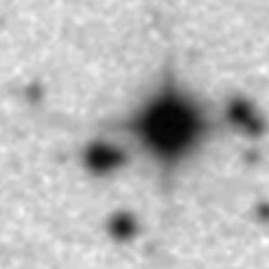

Planet Hunters
The Planet Hunters website offers the community the opportunity to visually inspect light curves from Kepler and K2. Through the website, users can help identify new transiting planets, eclipsing binaries, and other types of variable stars and transient phenomena. Thanks to the participation of hundreds of thousands of volunteers, Planet Hunters has discovered a number of new planets in the Kepler data to date.
CFOP and ExoFOP-K2
The Kepler Community Follow-up Observing Program (CFOP) website facilitates collaboration in follow-up studies of planet candidates discovered by Kepler (KOIs). CFOP contains up to date information about the stellar and planetary parameters for each KOI as well as links to a variety of analysis tools. Users from the community can also upload their own follow-up data and/or analysis to aid the discovery and characterization of Kepler planets.
The Exoplanet Follow-up Observing Program for K2 (ExoFOP-K2) website is similar to the CFOP, but instead facilitiates follow-up studies of planet candidates discovered by K2.
Both the CFOP and ExoFOP-K2 are funded by NASA through NExScI.
UBV Photometric Survey
The Howell-Everett Kepler Field UBV Survey provided photometry of the Kepler field in the Johnson/Harris U, B, and V filters. The photometry was acquired with the NOAO Mosaic1.1 Camera on the WIYN 0.9m Telescope on Kitt Peak. Additional information about the survey and the link to download the data can be found here.
Kepler INT Survey
The Kepler Isaac Newton Telescope (INT) Survey provided photometry of the Kepler field in the Sloan ugri filters as well as in H-alpha. The photometry was obtained with the Isaac Newton Telescope on La Palma. Additional information about the survey can be found here.
Kepler/GALEX
In 2013 MAST staff produced a Kepler/GALEX cross match catalog and search interface. This catalog allows for comparisons between the optical and ultraviolet fluxes measured by Kepler and GALEX.
Kepler/UKIRT
The United Kingdom InfraRed Telescope (UKIRT) data archive in Edinburgh provides positions and magnitudes for J-band sources within the Kepler field. Archive tools generate high resolution cut-out images on the fly and allow source cross matches around user-specified lists of coordinates. The UKIRT dataset covers 99.5% of the field and was observed and supplied by Phil Lucas (p.w.lucas at herts.ac.uk). The images have a typical spatial resolution of 0.8-0.9 arcsec. They are therefore useful for separating blended stellar pairs and spatially resolving external galaxies.
As an example, the top image below shows the UKIRT J-band image of KOI-326 (KIC 9880467). The bottom image is the same field obtained from the DSS2-Red database through NASA's Skyview facility.
 
Instructions for accessing the UKIRT J-band survey of the Kepler field
Note that UKIRT cut-outs around each Kepler planet candidate (KOI) are available on the CFOP website, but you are also able to download the UKIRT survey images by following these steps:
- The public database with all the UKIRT Kepler field data is available at the WFCAM Science Archive.
-
Enter the following public login credentials:
- username: WSERV4
- password: public
- community: nonSurvey
-
The database is called WSERV4v20101019.
- Cut-out images around objects of interest can be obtained using the MultiGetImage tool.
- Coordinates listings for sources near objects of interest can be obtained using the Cross-ID tool. Typical depth is J=19.6 (Vega system).
- The SQL source catalogue is "wserv4Source". This can be interrogated by typing an SQL query into the FreeFormSQL form, e.g. select ra,dec,japermag3 from wserv4Source where dec between 39.0 and 39.1
- The list of table columns is available under the Schema Browser. Look under Schema Browser/WSA Non-Survey/10/WSERV4v20101019/wserv4Source.
K2/UKIRT
The Kepler/K2 Guest Observer and Project Offices are currently running two UKIRT programs, one to collect high spatial resolution images of the K2 fields in the K-band with the wide-field camera (WFCam) and one to acquire K-band spectra of K2 targets of interest with UIST.
The K2/UKIRT program follows the footsteps of the Kepler/UKIRT program, with the goal of improving upon the 4 arcsec pixel scale of the Kepler spacecraft to aid the community in vetting transiting exoplanet candidates, cluster science, and extragalactic science. The primary goal of the spectroscopic program is to provide a uniform catalog of spectra of cool exoplanet candidate hosts (e.g. M dwarfs) discovered by K2.
All UKIRT observations of K2 fields/targets will be made publicly available to the community on the ExoFOP website for K2.